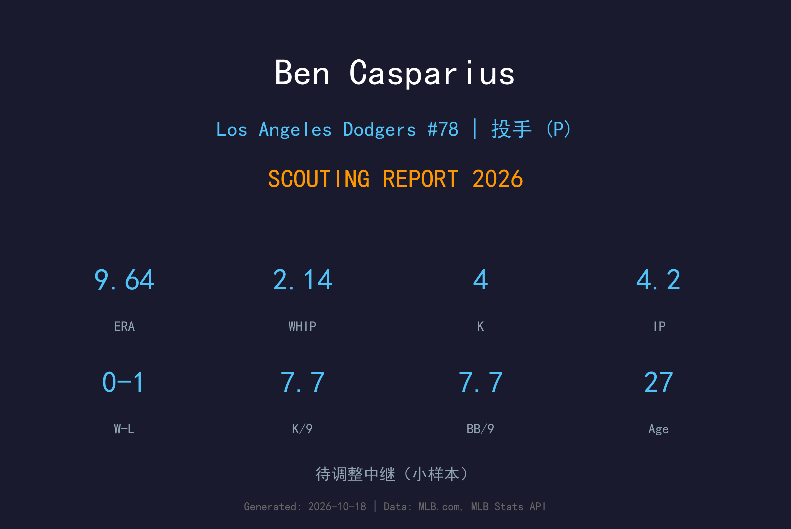
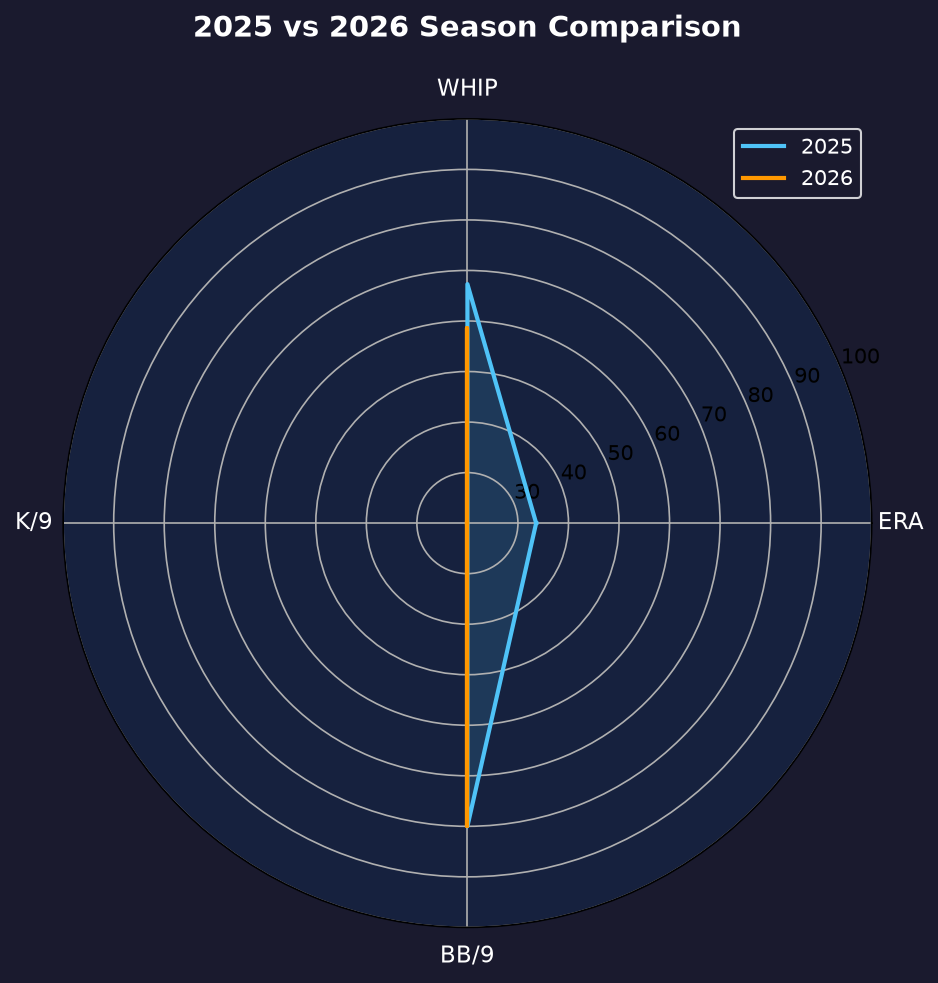
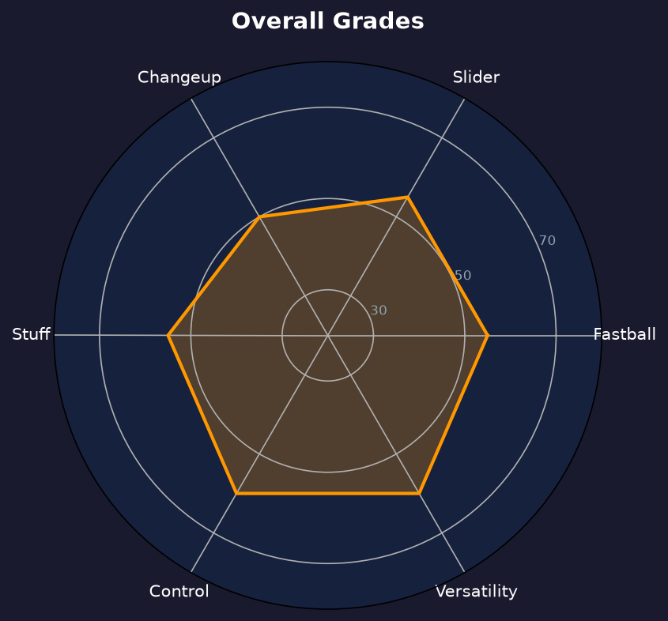

Los Angeles Dodgers #78 | 后援投手 | 右投 / 右打 | 康涅狄格强腕

Ben Casparius 是道奇自家培养的右投，2025年46场出赛、13次 hold 证明了自己是牛棚里最可靠的隐形功臣。但2026年只投了4.2局就因伤高挂免战牌，成为球队伤病名单上最令人惋惜的名字之一。
2025年的 Casparius 是典型的"中坚型中继"：77.2局、71次三振、2.43 BB/9、13 hold、inherited runners 29 人中仅 1 人得分——这个 96.6% 的救援成功率是全队最佳。他的滑球与速球组合不华丽，但能在任何时候上场吃下局数。
27岁的 Casparius 正处在投手生涯的黄金起点。2026 的伤病是挫折而非终点——道奇对他的耐心不会因 4.2 局的灾难样本而改变。2027年他的目标是完全康复，重新证明自己是那个 "29 人中只让 1 人得分" 的隐形功臣。
以道奇自家选秀身份登上大联盟，开始在高水平舞台展现实力。
46场出赛、77.2局、13 hold，inherited runners 29 人中仅 1 得分（96.6% 救援成功率），是道奇牛棚最可靠的中继之一。
仅出赛5场（4.2局）后进入伤病名单，赛季末仍在 IL-60。
⚠️ 小样本警告：仅 4.2 局，且大概率带伤投球，数据不反映真实水平。

| 赛季 | G | W-L | ERA | IP | SO | BB | WHIP | Hold |
|---|---|---|---|---|---|---|---|---|
| 2025 | 46 | 7-5 | 4.64 | 77.2 | 71 | 21 | 1.27 | 13 |
| 2026 | 5 | 0-1 | 9.64 | 4.2 | 4 | 4 | 2.14 | 0 |
从 46 场的隐形功臣到 5 场的伤病样本，2026 对 Casparius 是失落的一年。道奇评估他的基准仍是 2025 年的 77.2 局。
球速：94-96 mph
评分：B+
均速 95 左右，尾劲优于速度，是他大量 early contact 的来源。
球速：85-88 mph
评分：B+
他的主要三振武器，位移锐利且能与速球形成速度差。
球速：86-88 mph
评分：B-
第三球种，用于扰乱左打者的 timing。
评价 Casparius 必须区分两个样本：4.2 局的 2026（带伤、无参考价值）与 77.2 局的 2025（真实水平）。后者显示他是一名能同时吃下多局数、处理 inherited runners、对付左右打的中坚中继——这种"瑞士军刀"属性在季后赛 roster 构建中价值极高。
2025 年他 inherited runners 29 人中仅 1 得分（3.4% 失分率），这个数字在全联盟后援中属于顶尖水平。教练团敢在他上场时留一堆垒上跑者，本身就是信任的最好证明。
开季仅 5 场就因伤病倒下，对 Casparius 和道奇都是损失。他的缺席让道奇在季中不得不从外部寻找中继深度（这也间接促成了后续交易）。康复是他2026年的全部主题。

伤病的阴影遮不住 2025 年的隐形功臣本色
B 级 / 多功能牛棚拼图
2026 赛季开季后仅出赛 5 场即进入伤病名单，赛季末仍在 IL-60，未随队参加季后赛（道奇 NLDS 3-1 晋级、NLCS 0-4 止步期间他一直在伤兵名单）。
Ben Casparius 的2027赛季从康复开始。道奇牛棚竞争激烈，但他 2025 年的实绩是最好的敲门砖。
2026：开季5场（4.2局 9.64 ERA）→ 长期伤病名单 → 赛季报销
2027：目标完全康复、50+ 场出赛、找回 2025 年的压制力
2028+：若健康回归，可发展为高 value setup man 或 swingman
Benjamin Casparius 出生于康涅狄格州，2017年毕业于康涅狄格州的 Avon Old Farms 高中，随后进入康涅狄格大学（UConn）。在 Huskies 的三个赛季里，他从周末先发成长为球队王牌，大二赛季投出队史单季第二多的三振数，2021年入选 Big East 联盟第一队。
2021年选秀他未被选中，但凭借后续在夏季联盟与独立联盟的出色表现，于2023年被道奇在第4轮选中。这个"落选后再中选"的故事本身就写满了韧性——Casparius 用三年时间把选秀顺位从无人问津变成了第四轮。
2024年8月31日他完成大联盟首秀，2025年以 46 场出赛站稳牛棚，inherited runners 29 人中仅 1 得分的成绩让教练团记住了这个康涅狄格强腕。场外的 Casparius 以勤奋与低调著称，队友们叫他 "Cas"——一个正在用自己的方式书写道奇故事的自家孩子。